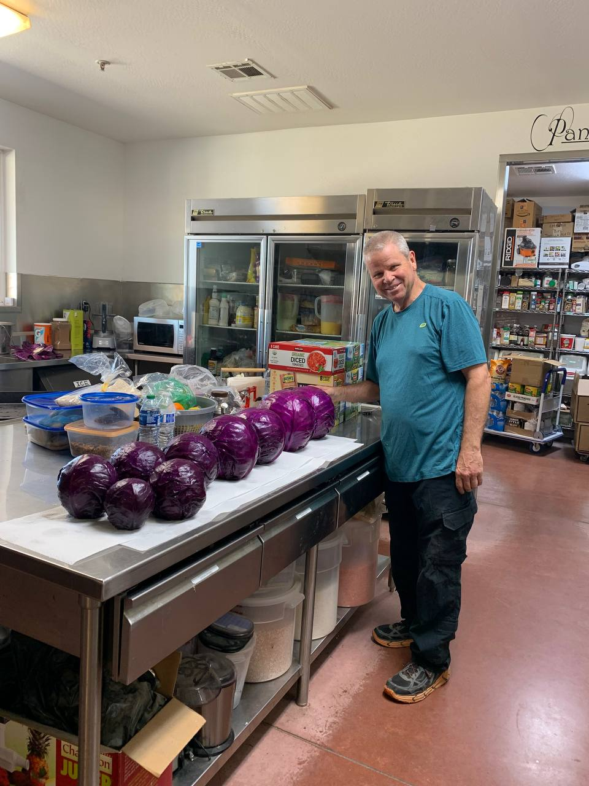
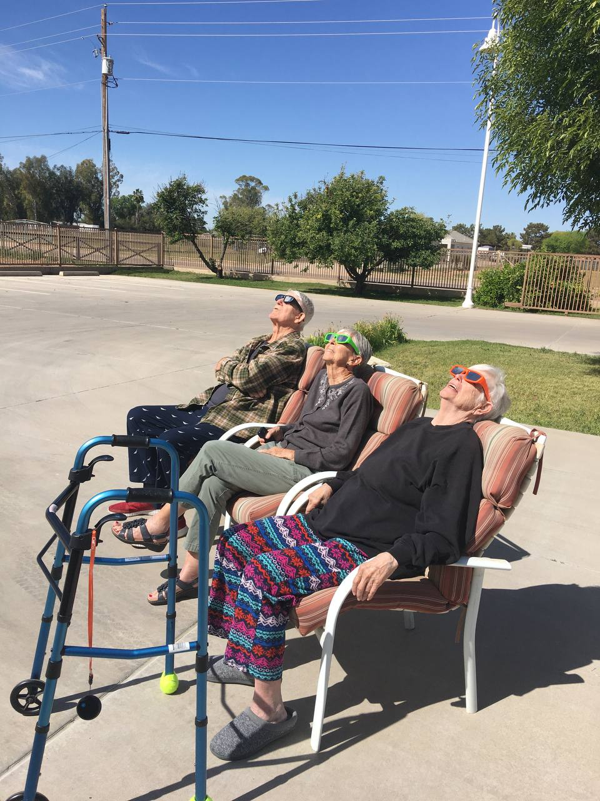
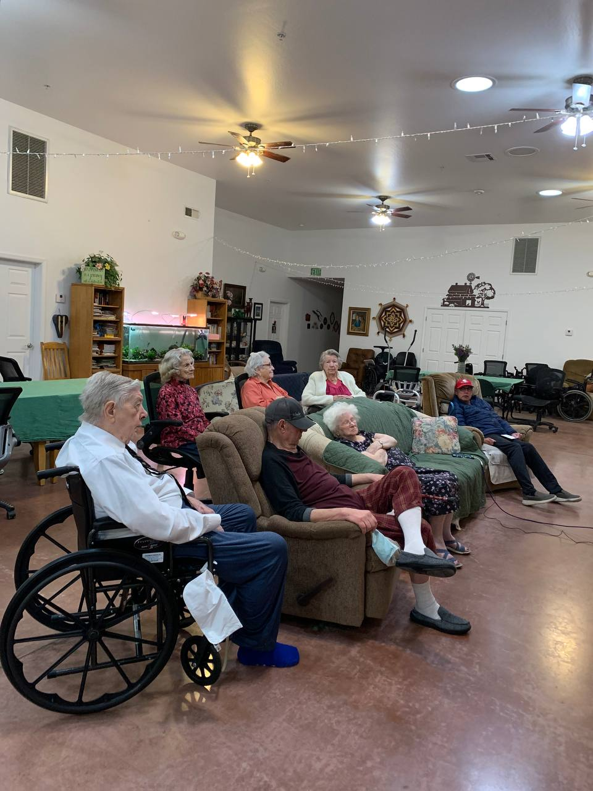

Welcome Home
At Serenade Assisted Living, we believe daily life should feel warm, familiar, and meaningful. Our residence is designed to provide personalized support while preserving each resident’s independence, dignity, and joy.

What Families Appreciate Most
- 24/7 attentive support from a compassionate care team
- A peaceful, home-like environment with comfortable shared spaces
- Chef-inspired meals and snacks prepared with resident preferences in mind
- A full calendar of social activities and uplifting community moments


Begin with Confidence
Choosing assisted living is a big decision. We make the process gentle and transparent, helping families understand options, timelines, and care details every step of the way.
